Рассказываете о бизнесе своими словами. Maker собирает стратегию, контент и рекламу
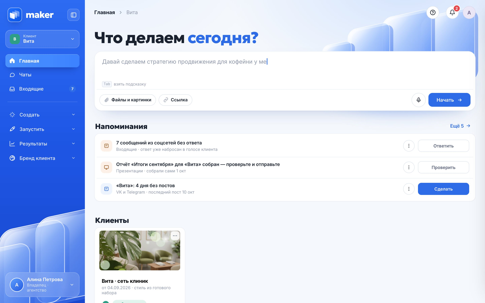
Маркетинг распадается на отдельные задачи, сервисы и подрядчиков
Таргет, контент-план, рубрики и десятки размеров для каждой площадки
Дорого, при этом непонятно, за что платишь и что действительно работает
Соцсети ведутся рывками, реклама запускается, когда появляется время
Текстом, голосом, файлом или ссылкой. Maker понимает, что нужно: стратегия, пост, баннер или лендинг
Начните с того, что уже есть
Ссылка на сайт, короткое описание или готовый пример
«Сеть клиник у дома. Хотим больше записей на чекапы из соцсетей. Ведём ВКонтакте и Телеграм, пишем спокойно и на «вы»»
Польза 40 % · Врачи и закулисье · Истории пациентов · Повод записаться
Женщины 30–55 и те, кто живёт рядом с филиалами
ВКонтакте 3 поста в неделю, Телеграм 2–3, сторис через день
На две недели вперёд — от «Чекап за одно утро» до истории пациентки
Данные из демо-кабинета клиники «Вита»
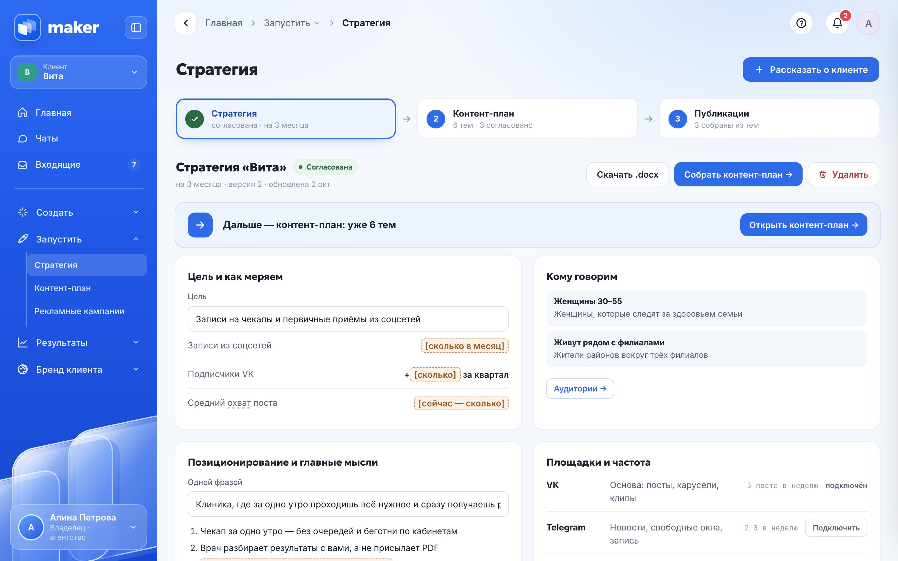
Цель, аудитории, площадки и рубрики
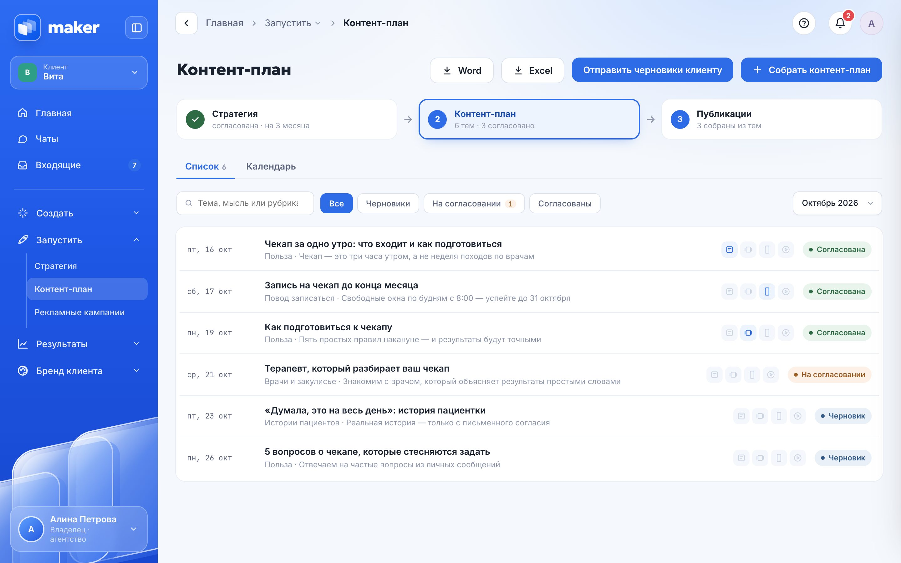
Темы на месяц по рубрикам стратегии
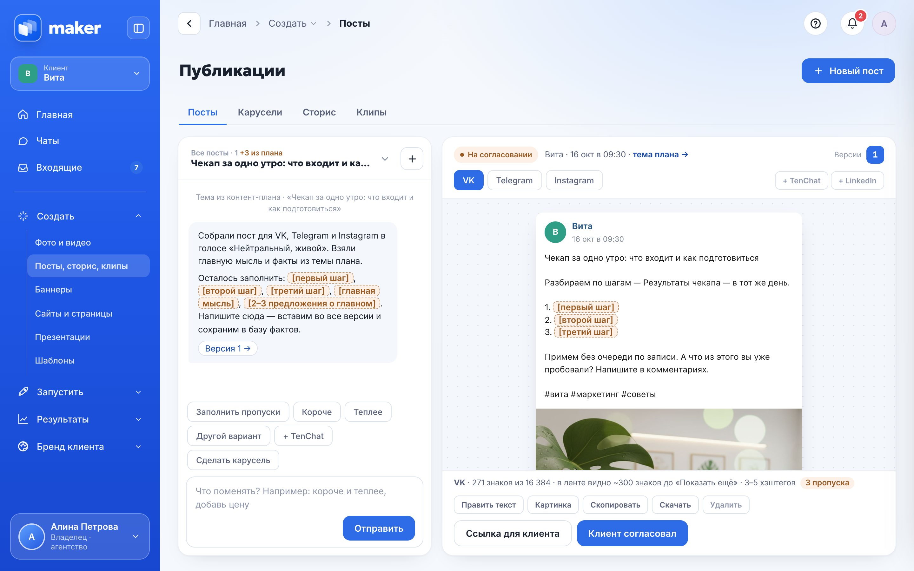
Посты, сторис и клипы под площадки
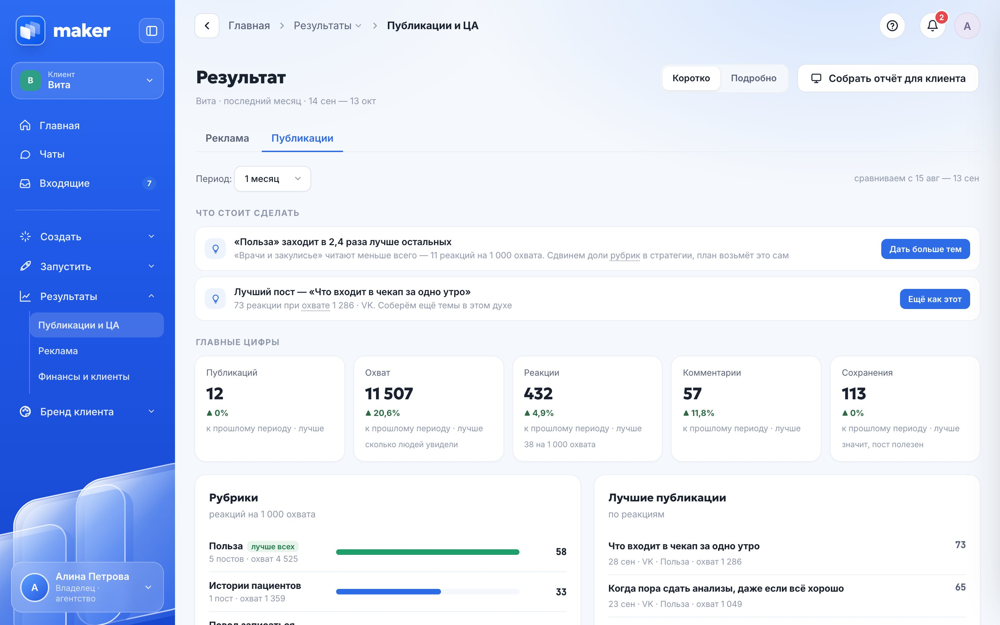
Что сработало и что делать дальше
«Короче», «теплее», «добавь цену» — и новая версия готова. Прошлую всегда можно вернуть
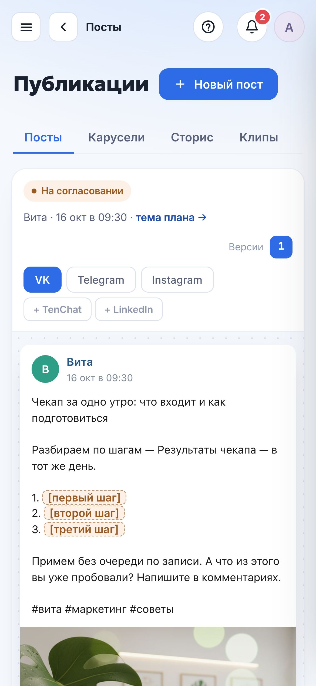
Один основной баннер — и готовы все размеры для площадок и рекламы, с маркировкой
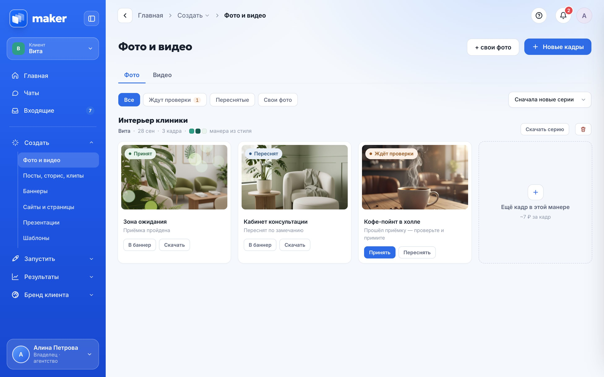
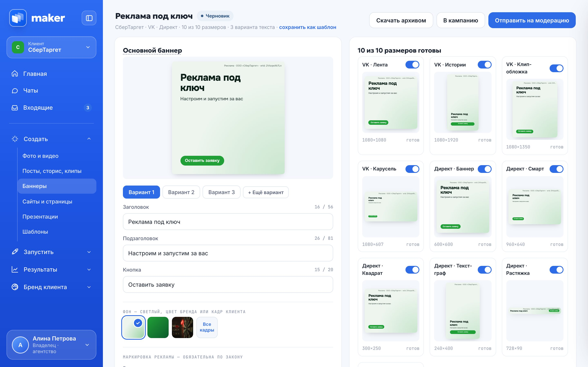
Яндекс Карты, 2ГИС, ВКонтакте и Телеграм. Ответ уже набросан вашим голосом и с вашими фактами
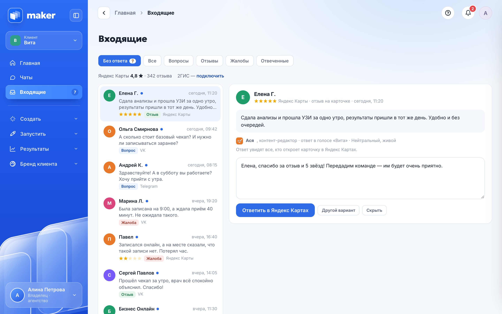
Maker собирает результаты и предлагает следующий шаг по реакции аудитории
«Польза» заходит лучше остальных рубрик
Цвета, шрифты и манера фото — каждый баннер и слайд в них
Lora · Golos Text
Как вы говорите с людьми — и как не говорите никогда
Цены, адреса, акции и запреты. Ответили один раз — ответ встаёт во все материалы
Кто ваши клиенты, что им важно и что их останавливает
Если Maker не знает цену, адрес или условия акции, он спрашивает. Ответ сохраняется и попадает во все материалы
Чекап за [цена чекапа] — анализы и разбор за одно утро
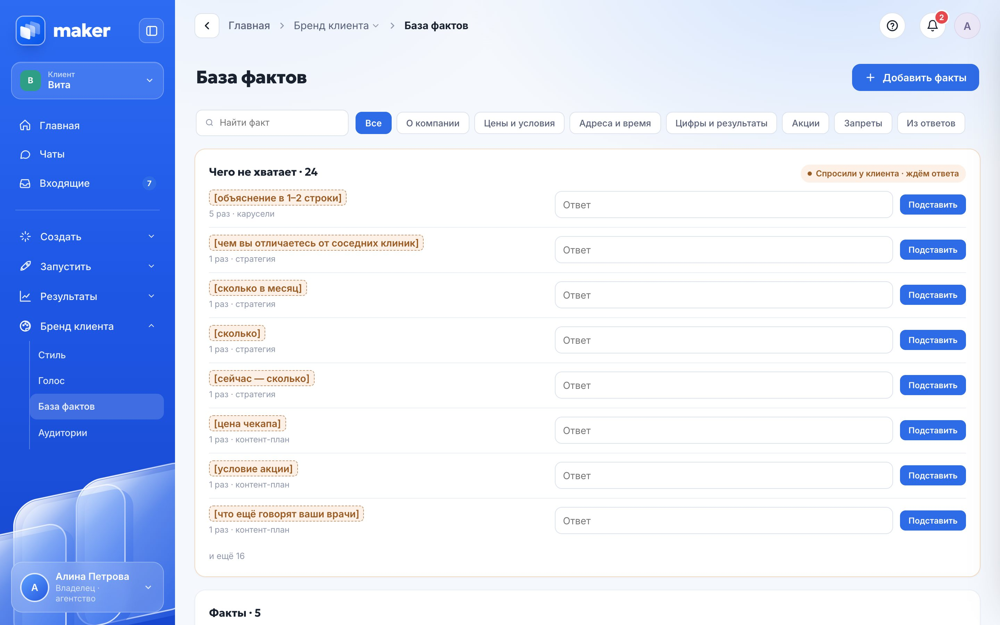
Микакоординатор
Тимстратег
Асяконтент-редактор
Левреклама
Норабренд-менеджер
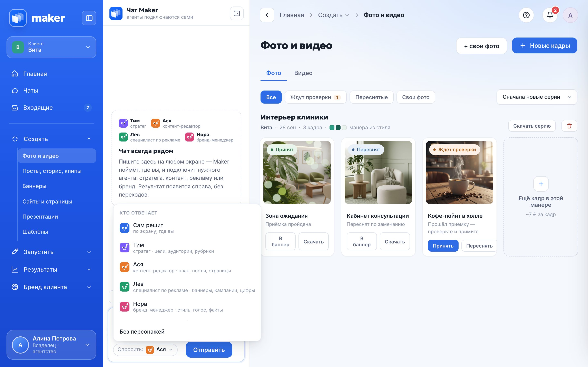
Публикуем по расписанию и собираем реакции
Запуск кампаний, расход и заявки
Отзывы, рейтинг и ответы на них
Оплаты и сделки — только чтение
Специалист подключается к Maker и ведёт здесь всех клиентов. Финансы по каждому — прямо из CRM
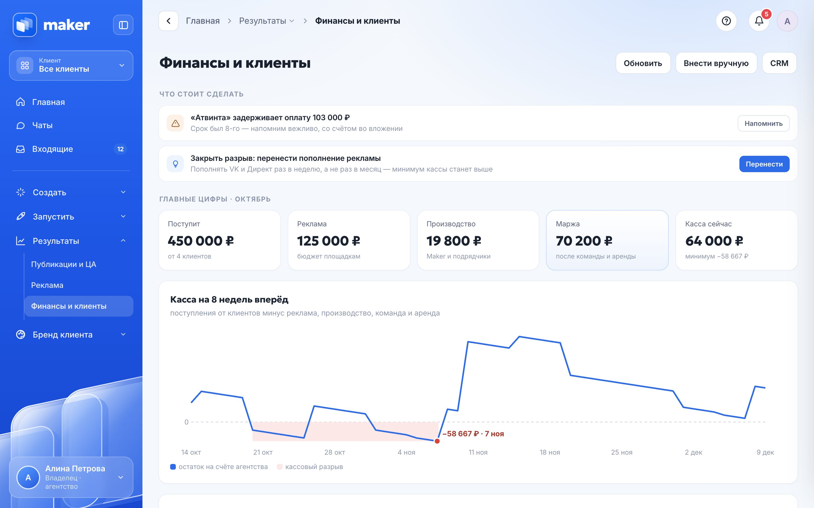
Все клиенты и деньги на одном экране
Подходит для своей команды, маркетолога и агентства
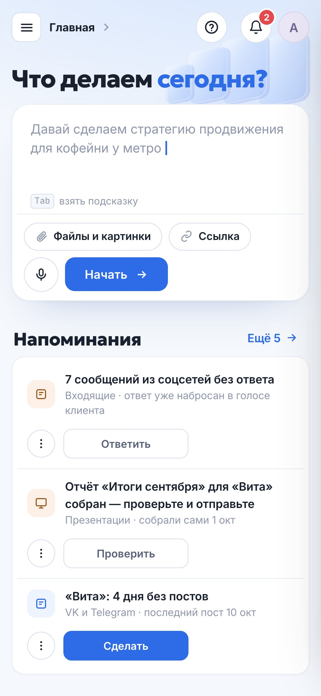